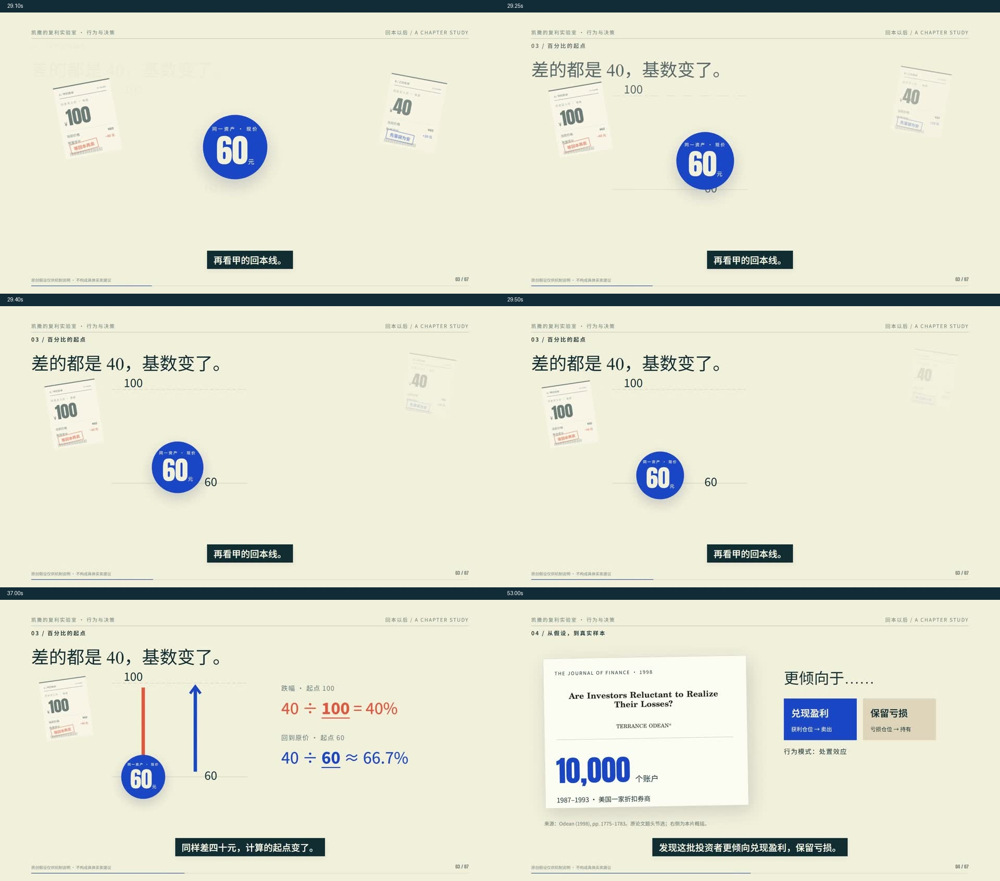
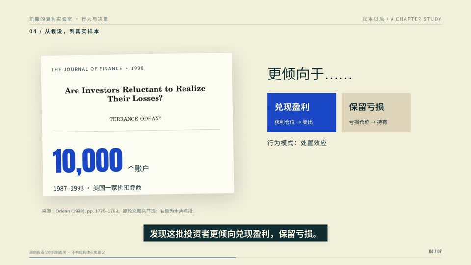

回本以后，
什么会改变？
同一只股票，两个买入价。用一段完整章节，区分历史账单与未来判断。
默认暂停；预览实际无音轨。105.57秒 · 1920×1080 · 30fps。配音文件需主动打开。
同一对象，带着问题往前走
账单退后，现价留下；现价进入标尺，分母发生变化；账单翻面，让证据替换旧理由。
七段干净画面、独立旁白、真实字幕时间和OFL字体都包含在工程中。

明确的证据边界
100 / 40 / 60是原创假设。研究的账户样本单独标注来源。行为倾向不等于唯一原因，成本也仍可能影响核算和税费。

作品与流程，分别记录
本章完成连续小样、完整粗剪和四项局部修复。抽样审查看到的问题与范围已留档，尚未证明8–10分钟长片质量，也不表示用户已经认可所有审美。
参考音乐仅在本地版使用，公开有声版仅旁白。用户已确认既有剪映／PR交接工作流，无需重复验证；源码、渲染素材和交换XML分别提供。